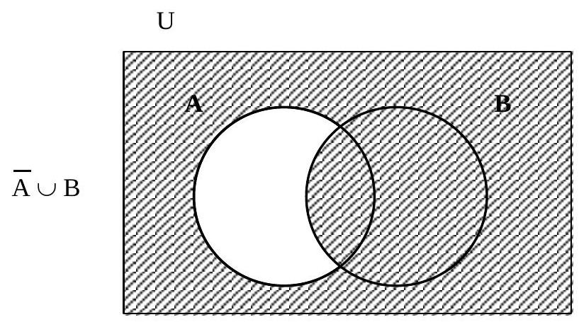
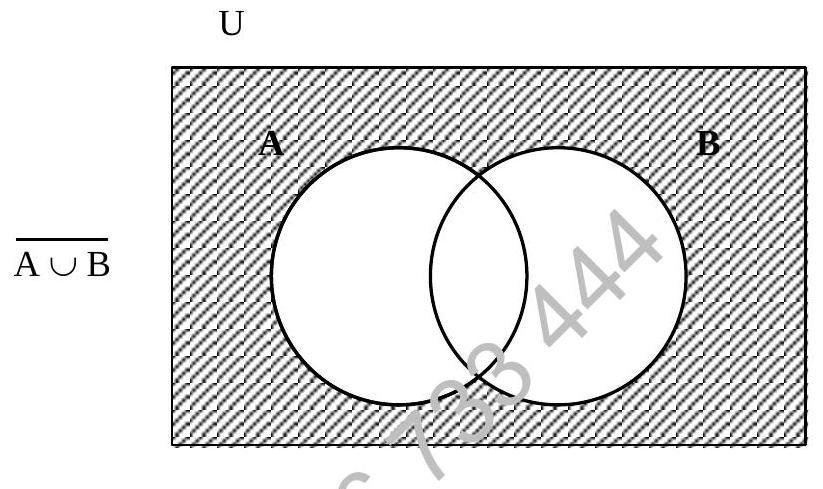
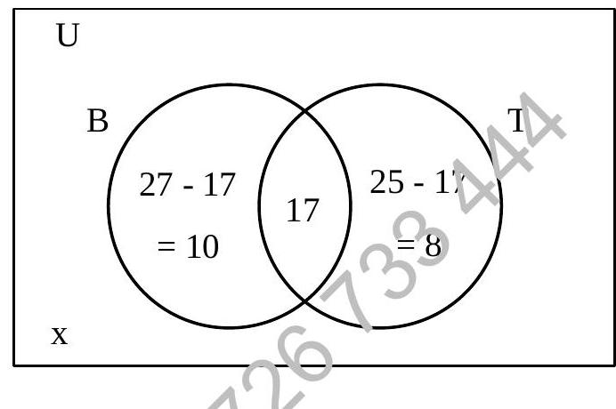
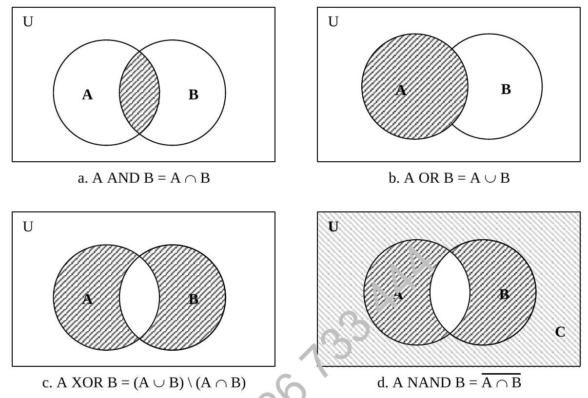
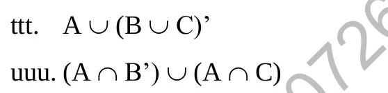
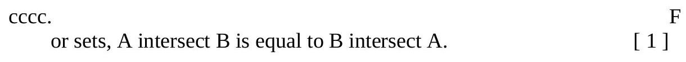

Chapter 4 : Set Notation Representation And Probability (Continued)
4.5.8 More Examples
Example: If $A = \{1, 2, 3, 4\}$ and $B = \{1, 2, 5, 6\}$ then $A \cap B = \{1, 2\}$
Fact
- If $A \cap B = \varnothing$ then A and B are disjoint.
Figure 4-7
Figure 4-8
Figure 4-9
4.6 Properties
Commutative Property
Associative Property
Distribution Property
Example: If $A = \{1, 3, 5, 7\}, B = \{1, 2, 3, 4\}$ and $C = \{3, 4, 7\}$ then
- $A \cap (B \cup C) = \{1, 3, 5, 7\} \cap \{1, 2, 3, 4, 7\} = \{1, 3, 7\}$
- $(A \cap B) \cup (A \cap C) = \{1, 3\} \cup \{3, 7\} = \{1, 3, 7\}$
Prove the second distribution property law.
4.7 Applications
Use of Venn diagrams in Solving Problems
Example:
In a group of 40 boys, 27 like to play basketball, 25 like tennis while 17 like both. Deduce the number of boys who play neither game.
Solution:
Let B represent the set of boys who play basketball and T represents those playing tennis. We are told that 17 like both, that means $n(B \cap T) = 17$.
Let the number of boys who play neither game be x.
Figure 4-10
We are given n(U) = 40
Number only B = n(B) - n(B ∩ T) = 27 - 17 = 10
Number only T = n(T) - n(B ∩ T) = 25 - 17 = 8
Total = (Only B) + (Only T) + (Both) + (Neither)
40 = 10 + 8 + 17 + x
40 = 35 + x
x = 40 - 35
x = 5
Therefore, 5 boys play neither game.
4.8 Other Logical Relation
Venn diagrams in set theory can also be used to describe logical relationship. Namely AND, OR, XOR and NAND, they can be illustrated clearly on the diagram.
Figure 4-11
In programming, logical expressions are often used in selection statements and repetition statements.
Example:
If Age > 21 AND height >= 1.70
Age > 21, this condition will satisfy a set and height >= 1.70 will form another set:
The operator AND, has produced a region that is the common region of both sets, as shown in Fig 4.11a.
Points to Remember (Set Theory)
A set is defined as a collection of items which share a common feature and all items are unique.
Use Venn diagram to represent various sets. It is a good model to solve some real life problem.
Relationship between sets
| Subset | $\subset$ | ||
| Intersection | $\cap$ | $\Leftrightarrow$ | AND |
| Union | $\cup$ | $\Leftrightarrow$ | OR |
| Complement | $\overline{A}$ | $\Leftrightarrow$ | NOT |
| $\Leftrightarrow$ | corresponds to | ||
AND, OR and NOT are logical operators available in many computer languages.
4.9 Past Years Questions (Set Theory and Venn Diagram)
9. If the universal set P consists of all integers from 1 to 30 inclusive, set Q consists of all prime numbers in the range 10 to 30 inclusive and set R contains all integers in the range 10 to 20 inclusive. Find:
- $R \cap Q$
- $(R \cup Q)'$
Draw Venn diagram for the following:
- $(A \cup B) \cap (A' \cap C)$
- $(A \cup B) \cap (A \cup C)$
Use a Venn Diagram to represent the following expressions:
- $A' \cap B'$
- $A \cap B \cap C'$
- $A \cup B$
The universal set A consists of all integers from 11 to 30 (both numbers inclusive). Let B be the set of all odd numbers in A, and C be the set of integers in A which can be wholly divided by 3 (i.e. 12, 15, 18, ..., 30).
Find
- $B \cup C$
- $B' \cap C'$
Given the following Universal set U and its two subsets P and Q, where
- Draw a VENN diagram for the above [8]
- List the elements in $P' \cap Q$
Use a Venn Diagram to represent the following:
- $A' \cap B' \cap C$ [3]
- $(A \cup B) \cap C'$
If the universal set consists of all integers from -2 to 6 inclusive and $P = \{-2, 0, 3\}$ whilst $Q = \{1, 3, 5\}$ what are the elements of:
- $P' \cap Q'$
- $(P' \cup Q)'$
A computer school has 33 students, each of whom is sitting for examinations in at least one of the following: BCP, RMS, CP. 12 students take all three subjects, 14 take RMS and CP, 16 take BCP and RMS, 18 take BCP and CP, 21 take CP. The same number of students take BCP as take RMS.
- Put all this information into a Venn Diagram, denoting the number of students who take RMS only and BCP only by X and Z respectively. [5]
- Find the values of x and Z.
- How many students are sitting only one subject?
Given $U = \{\text{integer } x : 1 \leq x \leq 40\}$
$A = \{\text{integers between 1 and 20 inclusive}\}$
$B = \{x : x^2 < 100\}$
C = {prime numbers}
D = {multiples of 3}
List the elements (if any) in
- $A \cap B$
- $B \cap C$
- $B \cap D$
- $(C \cap D)'$
- $B \cap C \cap D$
In a class of 63 students, there are 27 students who can speak Spanish, 24 French and 20 German. There are 7 students who can speak both Spanish and French, 5 both French and German, 6 both Spanish and German, and 6 who speak none of the 3 languages. Let n(S), n(F), n(G) denote the number of students who can speak Spanish, French and German respectively. Using the formula:
- Find the number of students who can speak all 3 languages.
- Draw a Venn Diagram and fill in the correct number of students in the diagram.
- Find the number of students who can speak only one of the languages. [4]
- What is the probability of any one student selected at random being able to speak exactly 2 of the languages. [2]
- If a studious Spanish only speaker learnt French, what would be the new probability of any one student selected at random being able to speak exactly 2 of the languages? [2]
A survey of 100 people is conducted to determine how many students excel in the following subjects: Maths (denoted by M), Science (S) and Arts (A). Given:
- The number of students who excel in all 3 subjects: 8
- The number of students who excel in both S and M: 23
- The number of students who excel in both M and A: 20
- The number of students who excel in both S and A: 28
- The number of students who excel in S only: 24
- The number of students who excel in M only: x
- The number of students who excel in A only: y
- Represent the above information in a VENN diagram.
- Given that the number of students who excel in Maths is more by 8 than those who excel in Arts, derive a pair of simultaneous equations in x and y.
- Solve these equations.
- What is the probability of choosing two people at random, both excelling in only one subject?
Use a Venn Diagram to represent the following:
- $A \cup (B \cup C)'$
- $(A \cap B') \cup (A \cap C)$
A survey of fifty athletes found the following to be true:
- 12 athletes have not won any medals;
- 8 athletes have won only bronze medals;
- 1? athletes have won only silver medals;
- 7 athletes have won only gold medals;
- 2 athletes have won medals of all three types;
- 8 athletes have won bronze medals and only one other type of medal;
- 17 athletes have won gold medals (but some of them have won other medals too)
- How many athletes have won both bronze and silver medals but not gold medals? [1]
- How many athletes have won silver medals and at least one other type of medal?
- How many athletes have not won any bronze medals?
A survey of animals at a zoo records the following facts about each creature; whether it has stripes; whether it eats meat; whether it climbs trees. Draw separate Venn diagrams for each of the following animals, shading those areas which represent true facts:
- Zebra (stripes, not a meat-eater, does not climb trees) [ 2 ]
- Leopard (no stripes, meat-eater, climbs trees)
- Chipmunk (stripes, not a meat-eater, climbs trees)
- Elephant (no stripes, not a meat-eater, does not climb trees)
State whether the following statement are TRUE or FALSE:
- For sets, A union B is equal to B union A. [1]
- For sets, if A is the complement of B, A intersect B is empty. [1]
- For sets, if B is the complement of A, A intersect B is empty.